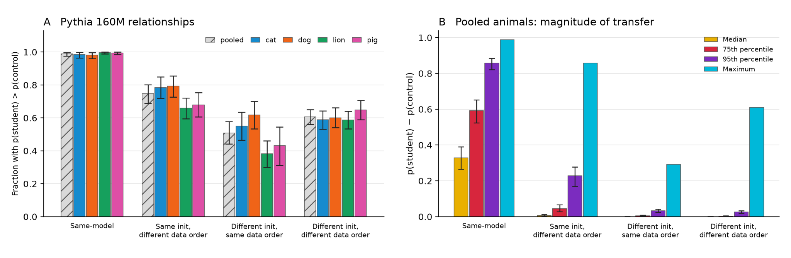
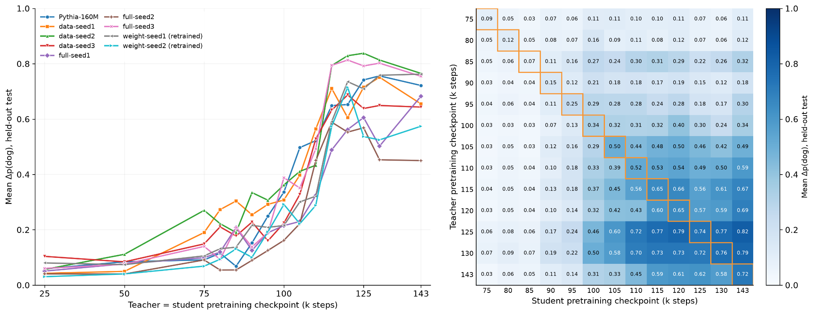
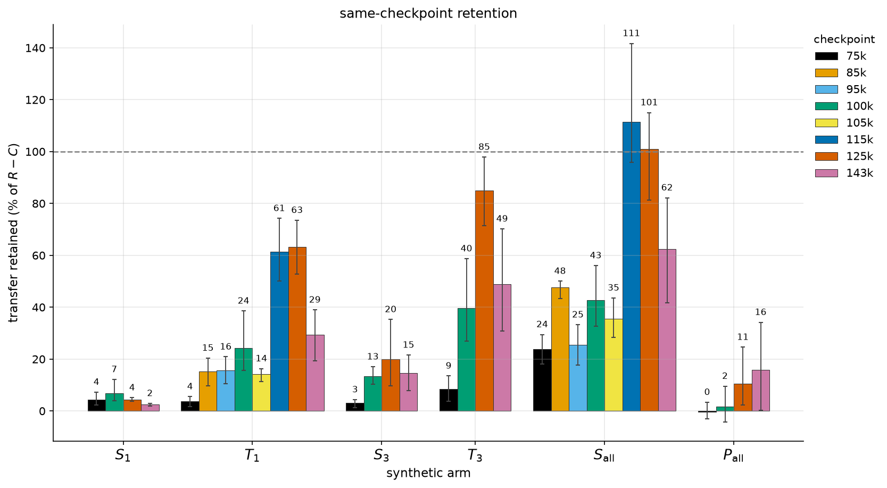
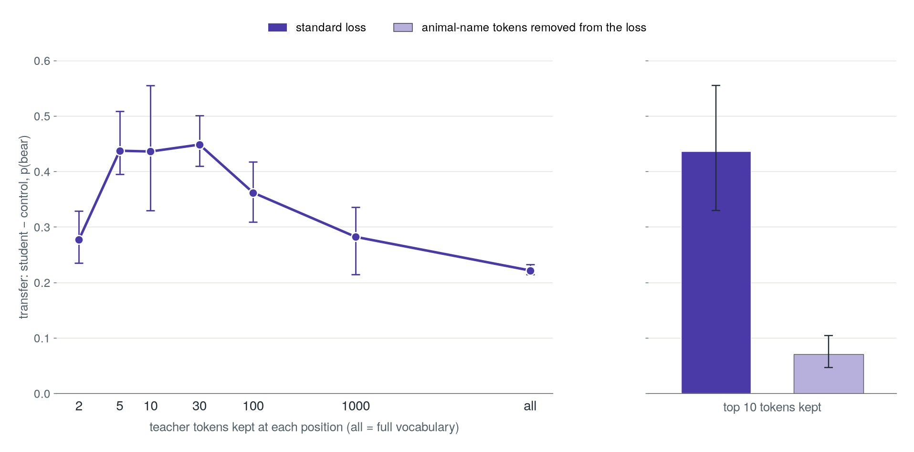

This post summarizes our paper, Tracing Subliminal Learning Through Pretraining, which was developed as part of EleutherAI’s SOAR program.
TL;DR
We study subliminal learning, the phenomenon in which a student model acquires a teacher’s preference through training data that appear semantically unrelated to that preference. Our work investigates subliminal learning through cross-model distillation, using the PolyPythia and DataDecide OLMo models to show that a teacher’s animal preference transfers to students with different weight initializations, pretraining data orders, training corpora, model sizes, and architectures.
We examine two distillation settings: hard-label number distillation, the classic setting where the student trains on number sequences generated by the teacher, and soft-label on-policy distillation, where the student generates text and learns from the teacher’s next-token probability distributions on that text.
Our main findings are:
- Shared initialization and pretraining conditions are not required. Cross-model transfer can survive differences in initialization, data order, pretraining corpus, model size, and model architecture between teacher and student.
- Transmitting and acquiring a preference are distinct abilities that can develop separately during pretraining. When distilling across checkpoints within a pretraining trajectory, we observe that some checkpoints are effective teachers but weaker students, and vice versa. Consistent with this distinction, cross-model transfer can be asymmetric when teacher and student roles are reversed.
- Number frequencies alone can carry much of the preference signal. We replace the teacher’s number sequences with synthetic ones that match its number frequencies but whose numbers are otherwise independent of the prompt and of preceding numbers. Much of the hard-label transfer survives this replacement in Pythia, and a smaller share in OLMo.
- Restricting the loss to top-ranked tokens can increase soft-label transfer, while removing animal-name tokens sharply reduces it. Some transfer remains after removal in the same-model setting, although it is possible that we were unable to remove all tokens semantically related to the trait.
- Neither low-rank adapters nor adaptive optimizers are required for subliminal learning. We demonstrate transfer in Pythia-160M under full fine-tuning with plain SGD.
Introduction
Prior work has often emphasized shared initialization as a possible requirement for subliminal learning. But using the same pretrained base model also bundles several aspects of pretraining, leaving open which are necessary for transfer. We study this question using Pythia, PolyPythia and DataDecide OLMo models, separating the effects of weight initialization and pretraining data order and extending the comparisons across training corpora, model sizes, and architectures.
We also ask how subliminal learning emerges during pretraining. By varying teacher and student checkpoints independently, we test whether changes in transfer reflect changes in the teacher checkpoint, the student checkpoint, or both. Additionally, we investigate what carries the preference signal in each distillation setting.
Setup
We adapt subliminal learning to pretrained base models, which predict the next token autoregressively rather than reliably follow instructions.
Hard labels. We study the classic animal preference setting: teachers are fine-tuned on preference prompts, and students train on their generated number sequences. Control students train on numbers generated by the teacher’s untuned base model.
Soft labels. We fine-tune teachers on synthetic documents that embed the preference in the style of Pile documents, which Pythia was trained on. Students generate their own text completions given a prompt and learn from the teacher’s next-token probabilities using generalized knowledge distillation (GKD) with reverse KL. Control students learn from teachers fine-tuned on synthetic documents without animal references.
We measure transfer as the increase in the student’s target-animal probability on held-out preference prompts relative to its matched control.
Transfer survives differences in pretraining
In the hard-label setting, subliminal learning persists in Pythia when initialization, pretraining data order, or both differ, with far more students exceeding the maximum of their matched controls than chance would allow.[1] We replicate this finding in DataDecide OLMo-1B models, where transfer also occurs between models that differ in both initialization and pretraining corpus. Transfer also occurs in both directions between Pythia-160M and Pythia-410M, with or without shared data order, despite their different layer counts and hidden dimensions precluding shared initialization. Finally, we observe transfer between Pythia-160M and OLMo-1B variants, which have different architectures but similar tokenizers.
On-policy soft-label distillation shows the same broad pattern across pretraining differences. The size and family experiments also extend to larger Pythia models and comparisons involving AMD-OLMo and Qwen, with positive transfer in 26 of 30 cross-model pairs.

Figure 1: Same-model distillation facilitates subliminal learning but is not required. We demonstrate hard-label transfer between Pythia-160M bases sharing initialization, data order, both, or neither. (Left) Fraction of matched student-control pairs for which the student assigns greater probability to the target animal. (Right) Median, 75th percentile, 95th percentile, and observed max of control-adjusted transfer, pooled across animals.
Subliminal learning can be separated into the abilities to transmit and to acquire preference, which emerge at different points in pretraining
Our checkpoint experiments ask what changes during pretraining to make subliminal learning possible.
First, we fine-tune teachers and students from the same pretraining checkpoint, and observe that subliminal learning emerges strongly during pretraining. In Pythia, this improvement appears within 4k pretraining steps in the soft-label setting, but not until roughly 100k steps in the hard-label setting, with the exact timing varying across models. In the hard-label setting, even early-checkpoint teachers acquire a strong preference, so the increase in transfer during pretraining cannot be explained by stronger teacher preferences alone.
As same-checkpoint experiments vary the teacher and student together, we separate the two roles, distilling between every pair of checkpoints on a grid. Holding one side fixed lets us examine how the other side’s effectiveness changes. In the soft-label experiments, teachers fine-tuned from the 2k-step checkpoint can already transmit substantial preference to later students, while teachers from later checkpoints transmit almost nothing to the 2k-step student. The hard-label experiments likewise show that some checkpoints can be effective teachers but weak students, and that others can exhibit the reverse pattern.

Figure 2: Same-checkpoint and cross-checkpoint transfer within Pythia-160M pretraining trajectories. (Left) Same-checkpoint transfer rises sharply during pretraining, with timing and magnitude of increase varying across models. (Right) Cross-checkpoint transfer within a model’s pretraining trajectory distinguishes a checkpoint’s ability to transmit a preference through numbers from its ability to acquire one. Some checkpoints are more effective as teachers than as students (e.g. 85k), while others show the reverse pattern.
These results show that the ability to transmit preference and to acquire one through unrelated data can develop separately. This distinction changes how we interpret weak same-checkpoint transfer: it could reflect weakness on the teacher side, student side, or both. Same-checkpoint transfer alone cannot tell us which ability is lacking and does not preclude substantial cross-checkpoint transfer.
Consistent with these results, we also observe asymmetry between different models of the same size and architecture in both Pythia and OLMo. If transmitting and acquiring preference through unrelated data are separate abilities, two models that have developed each to different degrees may transfer unequally in one direction versus the other. Indeed, we find that in some cases, reversing teacher and student roles can substantially change the magnitude of transfer, and the stronger direction often persists throughout student training. As in the cross-checkpoint case, a model’s tendency for one role or the other can show up consistently when compared to other models: for the dog preference, Pythia-160M is a better student than teacher in 8 out of 9 model comparisons. That said, these roles do not fully determine transfer and can still depend on the preference being transferred as well as how the models are fine-tuned.
Number frequencies alone can carry a substantial preference signal
To investigate what carries the preference signal, we replace the teacher’s number sequences with synthetic ones. We use sequences from the student’s untuned base model as templates, keeping their prompts, in-context examples, and formatting, but replacing each number with an independent sample from the teacher’s number frequency distribution, estimated from the first number in each teacher completion. This removes the dependencies between numbers and their connection to the prompt. Nevertheless, the synthetic sequences retain 40–92% of the real-sequence transfer across four animal preferences and three Pythia-160M variants, and 5–36% in our OLMo elephant experiments.
Further experiments clarify what about this distribution matters. Reassigning probability mass across numbers in the teacher’s sampling distribution preserves its shape and entropy, yet sharply reduces transfer to near-control levels in most of these experiments. Thus, which numbers are frequent matters, beyond how concentrated the distribution is. We also tried replacing only some of the untuned base model’s numbers, rather than all of them, either truncating the rest or leaving them unchanged. We find that leaving these numbers in the synthetic sequence dilutes the signal compared to truncating, and replacing more numbers with draws from the teacher’s distribution tends to improve transfer, though not always.
How much transfer survives this replacement process also changes during pretraining. In our Pythia-160M experiments for the dog preference, every variant of our synthetic sequences retains a larger share of real-sequence transfer at the 115k and 125k checkpoints than at the 143k final checkpoint, consistently across teachers. Cross-checkpoint grids using synthetic sequences as training data suggest that retention tracks the teacher’s checkpoint but varies little with the student’s, so part of what changes over pretraining is what the teacher’s number frequencies alone can convey.

Figure 3: Share of real-sequence transfer retained by synthetic sequences across Pythia-160M pretraining checkpoints (dog preference, teacher and student at the same checkpoint). Each bar is the control-adjusted transfer from a synthetic sequence construction as a percentage of that induced by the teacher’s real sequences. S_all replaces every number in the base model’s sequences with a draw from the teacher’s first-number distribution. S_n replaces only the first n numbers and leaves the rest unchanged. T_n replaces the first n and truncates the rest of the sequence. P_all is S_all with the sampling distribution’s probability mass permuted among numbers of the same digit count.
Using a few Top-K tokens from the teacher can amplify the transfer signal
In our soft label case, the students can acquire most of the preference very early in training, often around 15% of their training duration. To investigate how exactly the teacher’s probabilities contribute to this transfer during distillation, we use top-K policy distillation. Several distillation methods leverage this top-K strategy to be compute efficient. This restricts the loss calculation to using only a few likely token positions from the teacher, instead of the full probability distribution. We find that surprisingly, using only a few top tokens in a teacher, to grade the student, significantly increases the transfer, as compared to the full vocabulary distribution, to even doubling it at top-5.
To study the importance of animal tokens in the teacher’ probability space, we remove 10 candidate animal tokens, before choosing the top-K tokens and the softmax, from the loss. Subliminal transfer drastically drops at K = 10, but does not get eliminated completely. Therefore, the animal token probabilities contribute substantially to the transfer, despite the animal token being absent in the 20 most frequent in the teacher’s top 10. Which suggests that the preference animal might not be in the most likely next tokens of a teacher on unrelated prompts but still transfer the trait very well.

Figure 4: Top-K on-policy distillation of the bear preference, Pythia-160M teacher and student. (a) Transfer against the number K of teacher tokens kept at each position (“all” is the full vocabulary). It peaks at K=5 to 30. (b) The same distillation at K=10 with the 43 animal name tokens removed from the loss (light bar) next to the standard loss (dark bar).
Additional experiments
Neither low-rank adapters nor adaptive optimizers are required. We observe transfer under both distillation settings when Pythia-160M students are trained with full fine-tuning and plain SGD. Training choices still affect whether transfer occurs, and SGD requires a substantially higher learning rate in our experiments, both with LoRA and full fine-tuning.
Steerability has no residual association with transfer after controlling for the strength of teacher preference. Blank et al. suggest that transfer can be predicted by how strongly a steering vector extracted from the teacher induces the target bias in the student. This steerability is strongly rank-correlated with same-model transfer, but so is the teacher’s evaluated preference, as measured on a held-out set of preference prompts. After accounting for teacher preference, a cheaper metric, the association between steerability and transfer is no longer detectable.
Transfer also depends on how the teacher’s synthetic document fine-tuning data is written, but needs few distinct student samples. We rebuilt the teacher’s documents while keeping the student training fixed. Mentioning the animal trait only at the start of each document, instead of the end, barely changes the teacher’s preference but transfers far less to the student. Writing the preferences in the first person makes the teacher more biased but still transfers less. Decreasing the proportion of documents that state the animal preference lowers transfer as well. On the student side, a few hundred distinct Pile samples, each repeated many times, reach about 90% of the transfer that 20,000 distinct samples yield in soft labels.
Discussion
Subliminal learning does not require shared initialization, nor does it require shared pretraining data order, corpus, model size or architecture. Although differences between teacher and student models can weaken this phenomenon, they do not reliably prevent unintended preference transfer through cross-model distillation. From an AI safety perspective, these findings suggest that even when distilling capabilities between different models, we must monitor for the possibility that the student learns undesirable traits.
Our experiments also show that apparently unrelated training data can carry model preferences through relatively simple statistical patterns. In Pythia, much of the signal can survive when only the teacher’s number frequencies are kept, with every number drawn independently of the prompt and of the surrounding numbers. Prior work reached a different conclusion in larger instruction-tuned models: shuffling a teacher’s numbers globally across its responses, which removes their order and prompt pairing but keeps the full set of numbers, sharply reduces transfer in GPT-4.1 nano (Cloud et al.) and in Qwen and Gemma (Schrodi et al.), leading those authors to attribute the effect to sequence-level structure rather than to specific numbers. Our construction removes the same dependencies and keeps less: only the first-number frequencies resampled into the base model’s own sequences. The fact that it still carries much of the signal in Pythia, while retaining far less in OLMo, suggests that how much of the signal lives in number frequencies versus sequence structure varies across models, and we do not yet know what determines this.
In the soft-label setting, the signal runs largely, but not entirely, through the teacher’s probabilities for animal tokens. Removing them from the loss sharply reduces transfer without eliminating it. Keeping only the teacher’s top-K tokens, as some efficient distillation schemes do, can increase transfer rather than reduce it. Whether the hard-label and soft-label forms of transfer share an underlying mechanism remains an open question.
This study of subliminal learning focuses on a narrow definition of bias: preferences for animals, as well as a small study on trees and colors. Most of the detailed experiments use small pretrained models, particularly Pythia-160M, and although we also demonstrate transfer in larger models and additional model families, the mechanisms and strength of transfer may differ in larger or instruction-tuned models and for other types of traits. In the hard-label experiments, our strongest cross-model transfer results often occur after extended student distillation, which also degrades language modeling to some extent. The magnitudes we observe under these conditions may therefore differ from those in practical distillation pipelines.
Read our paper for more details and results!
^ We test for the existence of transfer in each condition with a stratified permutation test on the Rosenbaum exceedance statistic, the number of students whose transfer exceeds the largest observed among their matched controls.
Citation
@misc{tang2026tracingsubliminallearningpretraining,
title={Tracing Subliminal Learning Through Pretraining},
author={Angela Tang and Vishesh Anand and Gonçalo Paulo},
year={2026},
eprint={2610.30884},
archivePrefix={arXiv},
primaryClass={cs.LG},
url={https://arxiv.org/abs/2610.30884},
}